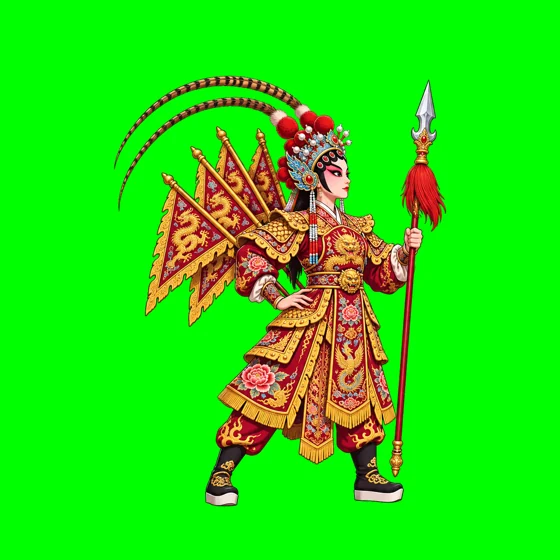
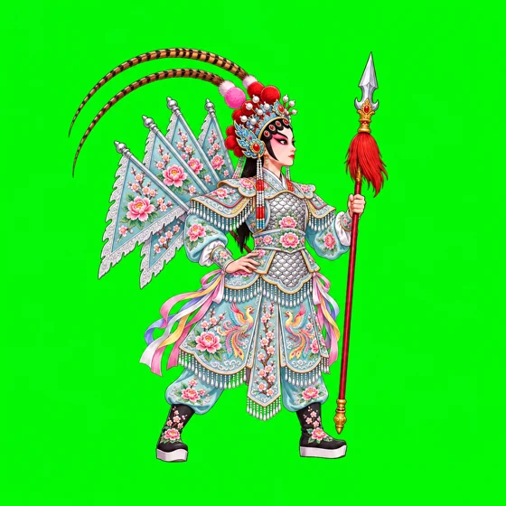
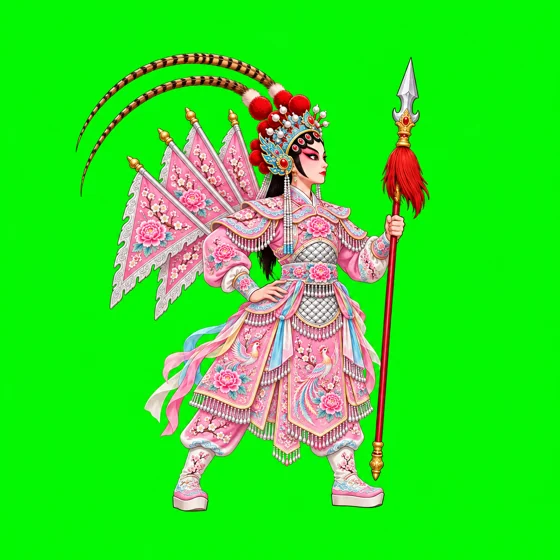

做 2D 游戏，最难的常常是美术：同一个角色要画几十帧，每帧衣服、武器都得对得上。这里试的是另一条路——只认真定一张原画，每个动作让视频模型从这张画出发演一段，再由程序抠图、对位、切成帧。
第一版颜色不对。查了戏服资料，女靠一般只用粉红、大红、淡湖几种颜色，绣的是牡丹和凤凰，不绣龙。照这个改了两版。



每个动作一段图生视频，程序先自动挑：转身了、换了颜色、首尾接不上的都打回重拍，然后逐张人工看过。一共拍了 16 段。
一次过。呼吸起伏，翎子和靠旗轻轻晃。
第三段才过，前两段首尾接不上。
一次过。蓄力、弓步平刺、收回原位，压到 0.7 秒。
前三段空中转身对着镜头，第四段又连跳两下，只截了第一跳。
后半段身子慢慢转正，只留了被打退那一下。
拍了六段，画面都能看，但靠旗、飘带、翎子一直在飘，盖过了腿的节奏，程序找不到能接成循环的一段。舞台上先用走路加速代替。
键盘：← → 走 · 按住 Shift 跑 · J 出枪 · K 或空格 跳 · H 受击